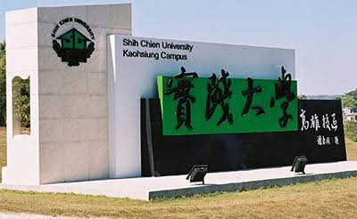
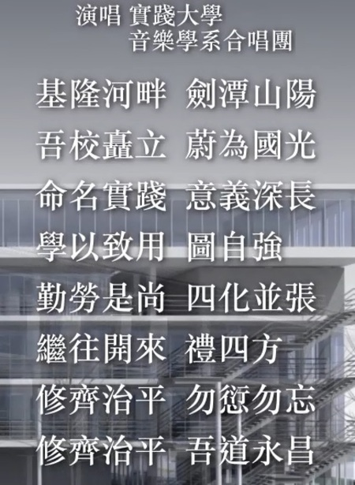

總作業
本校沿革

簡史
民國四十七年三月，謝東閔先生創立實踐家政專科學校，是本校最前身。
民國六十八年六月，校名改為實踐家政經濟專科學校。
民國七十五年五月，兼辦五年制專科。
民國八十年八月，改制為實踐設計管理學院，專科停招。
民國八十四年八月，高雄校區成立，開始招生。
民國八十六年八月，改名為實踐大學。
校名由來
本校創辦人謝東閔先生，深刻體認我國「修齊治平」的傳統哲學觀，並鑑於家為國之本，欲國家富強、民生樂利，必先健全家庭，於是在民國四十六年毅然決定創辦家政學校。翌年三月廿六日，中華民國第一所家政學校—私立實踐家政專科學校於焉創立。
創辦人同時揭櫫「力行實踐，修齊治平」之辦學理念，故學校以「實踐」命名。乃在闡揚王陽明先生所提倡之知行合一、即知即行之生活哲學。本校辦學應教導學子注重手腦並用，時時刻刻都能將思想化為實踐，由實踐而產生智慧才能。
創辦人在創校之初亦提出以「一個觀念：勤勞是快樂的；三個習慣：禮貌、整潔、物歸原處」作為學生生活教育之基本方針，此種凡事由小而大的務實與實踐的精神，乃是本校創立之最基本辦學理念。
創校歷史
由本校科系之設置，亦可看出前述穩健務實的辦學理念。創校之初僅設家政科，其後再增設服裝設計、食品營養、會計、事務管理、社會工作、音樂、美術工藝、兒童保育等科系。其後再配合社會脈動、工商經濟與資訊科技之發展，而陸續增設銀行保險、國際貿易、企業管理、室內空間設計、工業產品設計、資訊管理、媒體傳達設計、觀光管理、建築設計等科系。
自創校迄今，其間本校經歷下列重要階段之發展，由此發展過程亦可看出本校務實之辦學理念廣受肯定。
- 民國47年3月：奉准設立招生，校名為「實踐家政專科學校」
- 民國68年6月：更名為「實踐家政經濟專科學校」
- 民國80年8月：改制為「實踐設計管理學院」
- 民國84年9月：高雄校區開發完成開始招生
- 民國86年8月：奉准成為「實踐大學」
經歷逾50年的發展，本校目前已成為設有台北、高雄兩校區，分設民生、設計、管理、商學與資訊、文化與創意五學院之綜合大學。
辦學理念及目標
整體而言，由本校創辦人創校動機、學生專業與生活教育之方針、院所系之設置等各方面來看，本校辦學理念都是秉持講求根本、崇尚務實之精神，教學與研究亦均以「實用」為導向。本校自我期許能成為一所「為國家社會孕育具勤誠樸實、樂觀進取、有豐富生命涵養與服務奉獻熱忱，以及具備創造力、實踐力、國際觀特性之人才」的大學。
本校創辦人創校之初即指出家庭是人生的溫床，社會組織的基礎，若要人類生活美滿及社會健全，則首要「正家」，「家正」則天下定。因此，提倡以研究治理家庭為對象的家政學乃為本校創辦之初衷。創辦人在創校時提出倫理化、科學化、生產化、藝術化等四化之辦學目標，此目標及其功能意義如下：
- 家庭倫理化 － 奠定家庭基礎
- 家庭科學化 － 改善家庭生活
- 家庭生產化 － 發展家庭經濟
- 家庭藝術化 － 增進家庭樂趣
因此，本校創校時係以傳授青年女子治理家庭事務之訓練，增進其實用知識與技能，並養成健全身心為宗旨，同時教育之總體目標定為：「研究並推廣生活科學知能，增進生活福祉與生命意義」。
自1958年專科時代發展至1991年升格學院，乃至1997年改名大學迄今，本校總體發展方針不斷修正，與時俱進，密切與大環境的變遷契合。學校定位為教研並進之生活科學大學，培育才德兼備且具人文關懷、生活創意、科學素養與國際視野之實踐人為教育目標，期能以創新、實踐、至善的辦學理念，達到華人世界最佳生活科學大學的發展願景。
校歌
| 詞 | 謝東閔 |
|---|---|
| 曲 | 呂泉生 |

校徽

 點此下載 JPG 文件
點此下載 JPG 文件
 點此下載 PNG 文件
點此下載 PNG 文件